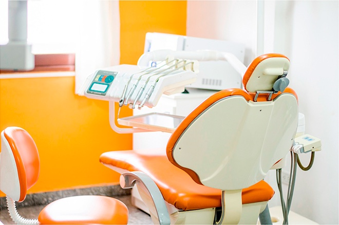
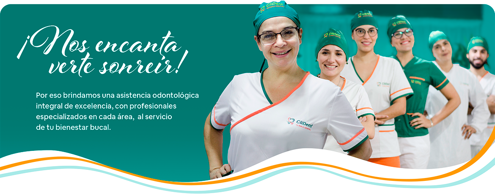
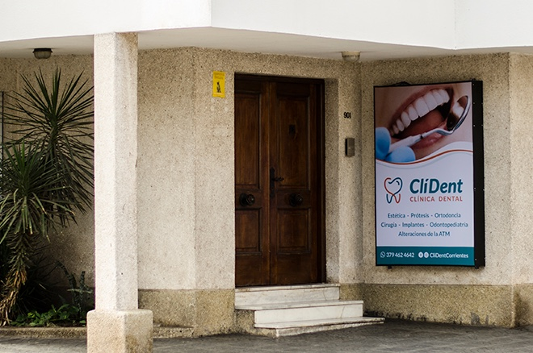

Consultorios odontológicos
Distintas especialidades, en la misma clínica.
Tu salud bucal, en buenas manos.
Odontología integral en Corrientes, para cada etapa de tu vida.


Desde un control de rutina hasta un tratamiento específico. Explorá nuestras especialidades y consultanos por tu caso.
Una alternativa para reemplazar piezas dentales. Consultá las opciones de tratamiento a partir de una evaluación de tu caso.
Consultar por implantesEvaluación y tratamientos para la alineación dental. Conocé las alternativas que ofrece la clínica según tus necesidades.
Consultar por ortodonciaConsultá por los tratamientos de blanqueamiento y la evaluación previa para definir si son adecuados para vos.
Consultar por blanqueamientoControles y evaluación de tu salud bucal. Un espacio para consultar tus dudas y conocer qué cuidados necesitás.
Pedir un controlAtención odontológica para niñas y niños. Consultanos para coordinar una visita y acompañar su salud bucal.
Consultar por odontopediatríaOpciones de rehabilitación protésica para recuperar piezas dentales. La clínica cuenta con laboratorio interno de mecánica dental.
Consultar por prótesisAtención enfocada en las encías y los tejidos que sostienen los dientes. Consultá por una evaluación periodontal.
Consultar por periodonciaEvaluación y tratamientos endodónticos. Comunicate para consultar por tu diagnóstico y coordinar una visita.
Consultar por endodonciaConsultas y atención en cirugía odontológica. Cada procedimiento requiere una evaluación y planificación clínica.
Consultar por cirugíaConsultá las opciones de rehabilitación que ofrece CliDent para las necesidades de tus piezas dentales.
Consultar por rehabilitaciónConsultas por trastornos de la articulación temporomandibular. Coordiná una evaluación para conocer las alternativas de atención.
Consultar por ATMAnte una urgencia odontológica, llamanos para consultar disponibilidad y coordinar la atención en la clínica.
Llamar a la clínica¿No sabés qué tratamiento necesitás? Empecemos por una consulta.
Te orientamosEn 9 de Julio 901 reunimos atención odontológica y laboratorio de mecánica dental, en una clínica pensada para recibirte.
Distintas especialidades, en la misma clínica.
Mecánica dental dentro de CliDent, como parte de nuestra atención.
Trabajamos con distintas obras sociales y prepagas. Consultá las condiciones de atención para tu plan y tratamiento.
Encontranos en 9 de Julio 901.
Consultá disponibilidad y coordinemos tu próxima visita.

Un mensaje, una consulta, un primer paso.
Contanos cómo podemos ayudarte.